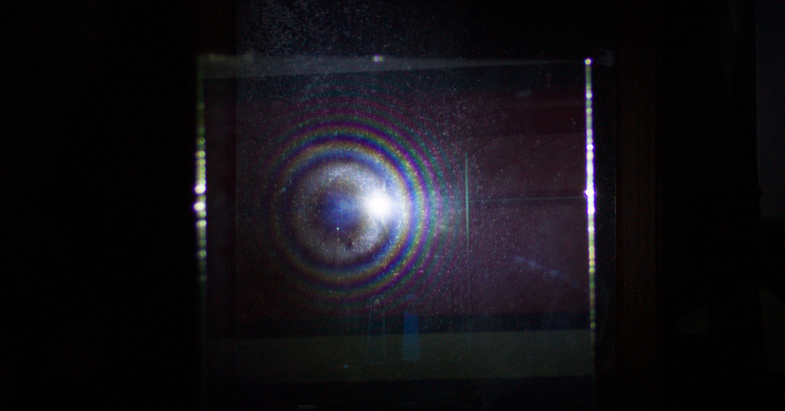
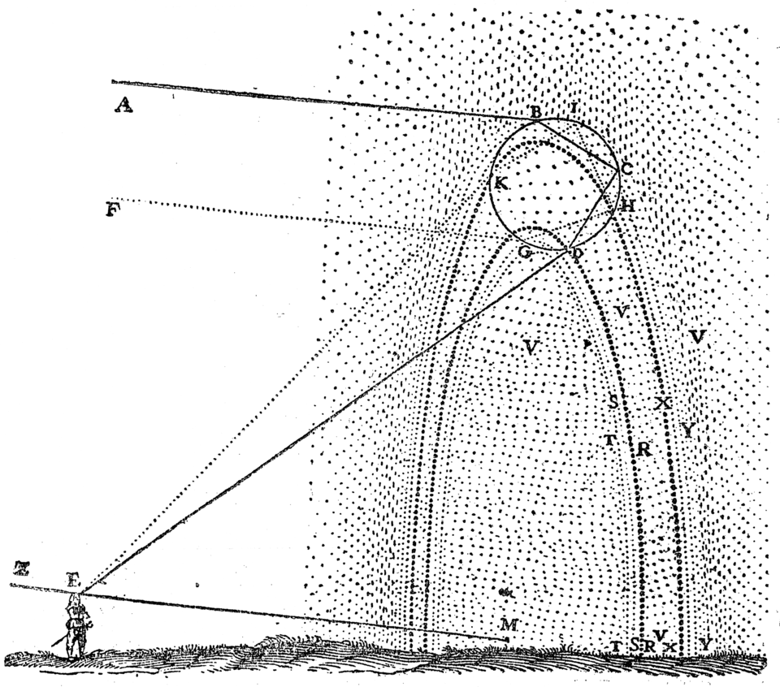
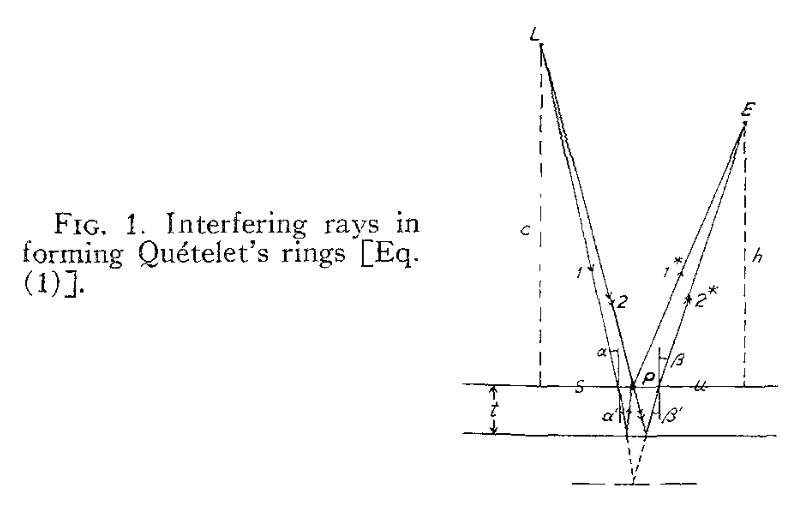
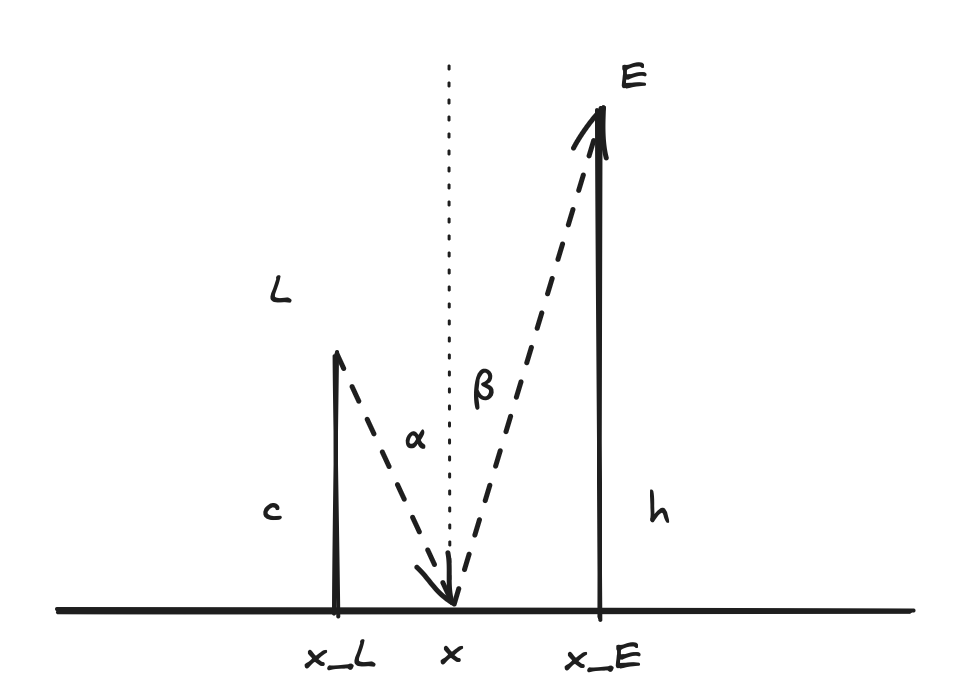
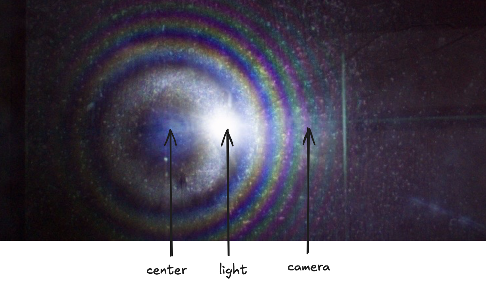
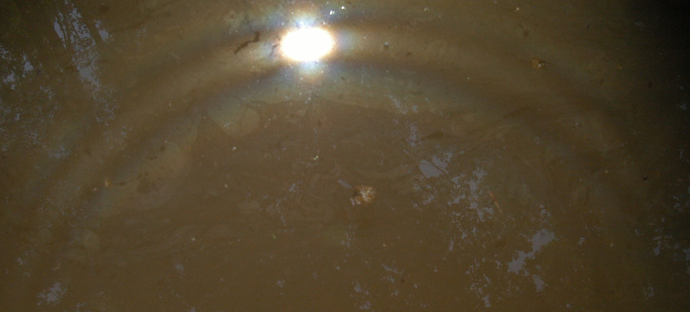
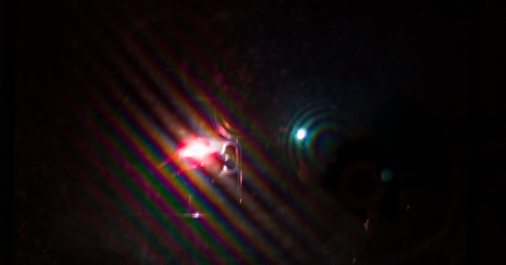
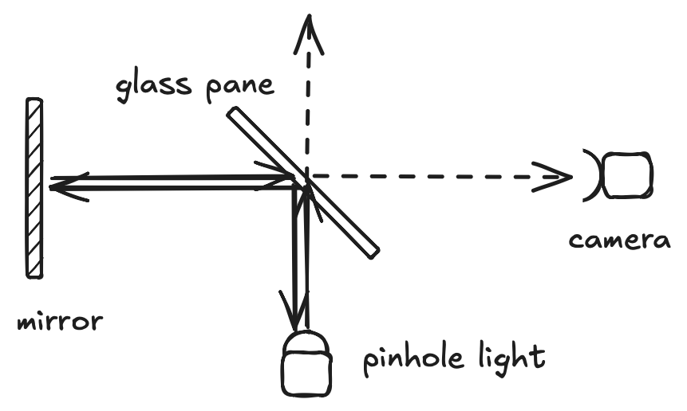
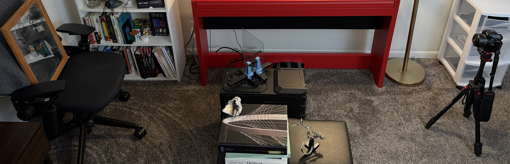
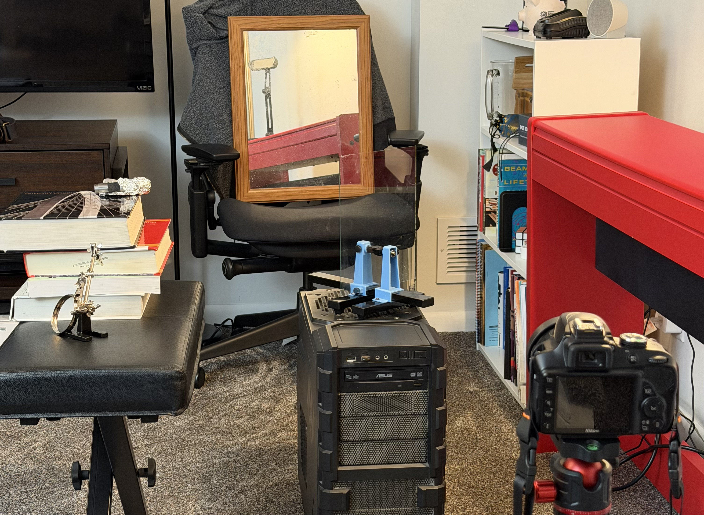

I made Quetelet rings at home!

There’s a few great mysteries here to explore:
- why are there color bands?
- why does the color pattern change (unlike a rainbow)?
- why are the colored bands circular?
- why are the rings not centered on the light source?
Quetelet rings are usually skipped over in Optics textbooks,
but there is a wonderful explanation in the following paper:
de Witte, A. J. (1967). Interference in scattered light. American Journal of Physics, 35(4), 301–313. https://doi.org/10.1119/1.1974069
I’d like to focus the last question: why are the rings not centered on the light source?
Where are the rings centered?
Centers of other optical phenomena
A Corona’s center is either the sun or the moon,
the source of the light:
A rainbow’s center is the antisolar point:

For Quetelet rings, the center is similar to the rainbow and changes based on the geometry
of the light and observer.
Why are there bands of color?
The key physical explanation is interference due to optical path difference
(See here for a general explanation)..
If two rays from the same source reach your eye with different path lengths,
the resulting wave superposition shifts the wavelength so the resulting color is different.
For Quetelet rings, the two different paths are:
- light refracts into the mirror and then scatters off the dust
- light scatters off the dust and then refracts into the mirror
de Witt derives the path difference as
\[\Delta = a(\cos\alpha - \cos\beta) \]
from the following diagram:

Note that I’m simplifying the constants here into a single term
\(a\) for simplicity.
Why are the bands circular?
Now the path difference \(\Delta\) only depends on the angles \(\alpha\) and \(\beta\).
So now we need to find the corresponding coordinates on the mirror that satisfy those angles
to find the shape of the bands.
First, let’s use small angle approximation to get
\[\Delta \approx a'(\beta^2 - \alpha^2) \]
Now, we want to find the set of points \((x, y)\) that satisfy this geometry:

With some trigonometry and the small angle approximation \(\theta \approx \tan\theta\),
we can derive
\[
\begin{align}
\alpha &\approx \frac{\sqrt{(x - x_L)^2 + (y - y_L)^2}}{c} \\
\beta &\approx \frac{\sqrt{(x - x_E)^2 + (y - y_E)^2}}{h}
\end{align}
\]
So for some new constant \(K\), we have
\[K = \frac{(x - x_E)^2 + (y - y_E)^2}{h^2} - \frac{(x - x_L)^2 + (y - y_L)^2}{c^2}\]
Working out the algebra, we get a center point
\[x_C = \frac{c^2x_E - h^2x_L}{c^2 - h^2}\]
(likewise for \(y_C\)).
Positions of Light and Eye
Now we can get some good intuition for where the center of the rings will be
based on the geometry of the light and eye.
c = h
When the light and eye are the same distance from the mirror, \(c = h\),
the center point goes to infinity, so the bands appear as straight lines.
c < h
What about when the camera is twice as far from the light, \(h = 2c\)? Let’s say \(x_E = 0\).
Then
\[ x_C = \frac{c^2 \cdot 0 - (2c)^2 x_L}{c^2 - (2c)^2} = \frac{-4c^2 x_L}{c^2 - 4c^2} = \frac{-4c^2 x_L}{-3c^2} = \frac{4x_L}{3} \]
This means the center of the rings is past the light source, from the perspective of the camera!

c >> h
Lastly, when \(c >> h\), like when the source of the light is the sun, the equation simplifies to
\[ x_C \approx \frac{c^2 x_E - h^2 x_L}{c^2 - h^2} \approx \frac{c^2 x_E}{c^2} = x_E \]
That’s the antisolar point, just like in the rainbow! Naturally occuring Quetelet rings
are very rare, but have been documented on algae films in ponds. Here are some
key references if you want to see more examples of naturally occurring Quetelet rings:

c < h and c = h
Here’s an image that captures the first two cases, when the light and camera are the
same distance to the mirror and when the camera is twice as far away.

This image is really helpful because you can see the position of the camera reflected in the mirror.
The \(c < h\) case is the white light and as described above you see the lens, light source, and center
in sequence.
The \(c = h\) case is the reddish light (from my smartphone flashlight passing through my hand).
The bands appear as straight lines.
Setup
First, I cheated a bit. This isn’t only a picture of a mirror:
it’s the an image of a mirror through a beamsplitter.
Here’s the pullback shot, which explains the setup:

With the diagram:

And two images of the setup in light:

And more from the caemera’s perspective:
